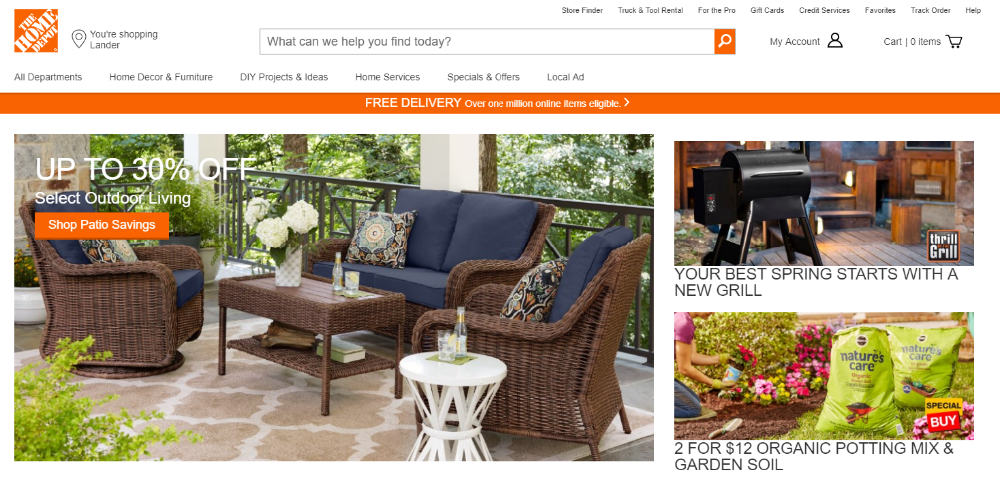
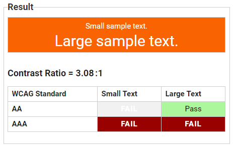
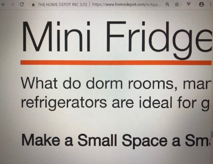
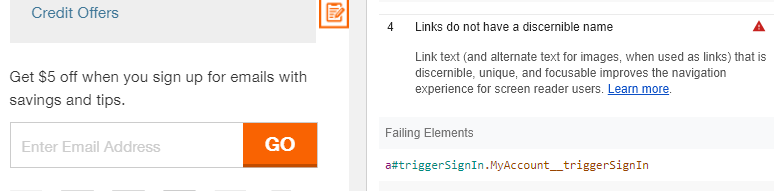
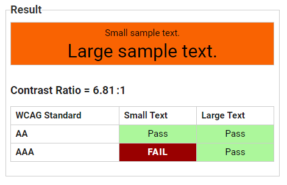

For this assigment, I analyzed the accessibility of The Home Depot website.
 The Home Depot Home PageIntended Audience
The Home Depot is the self-proclaimed "world's largest home improvement retailer". Products range from lightbulbs to garages. The Home Depot also rents equipment such as excavators and backhoes.
Most customers are home owners, but contracters, handymen, installers, and property managers ("Pro Customers") make up almost half of The Home Depot's customer base.
Purpose of Website
The Home Depot website allows customers to shop online for products and services, and offers ideas for DIY projects.
Standards and Tools Used
How well The Home Depot website meets WGAC 2.0 principles for perception and operation were assessed. Tools used in my evaluation included:
- Google Lighthouse Audit Tool
- WAVE "Web Accessibility Evaluation" Tool
- Test of screen reader and keyboard to navigate home page
I chose to analyze The Home Depot website because its Lighthouse audit score was so low (39) compared to other websites I tested. I also think it is a website that many different types of people use, although I expect most users are in their 30's or older.
Perceivable: Web content is able to be sensed by sight, hearing and/or touch
Contrast
Text needs to be distinguishable from background in order for content to be perceived by users. Both the Lighthouse and WAVE audit tools returned contrast issues. The orange of Home Depot's distinctive logo is used for buttons, background and some text throughout the site.
The Color Contrast Analyzer linked to in the Lighthouse audit shows the combination of Home Depot Orange (#f96302) and white as failing the minimum contrast ratio of 4.5:1 with small text.
 Color Contrast Analyzer results for orange background and white textContrast issues also occurred when white text was used on top of an image.
 WAVE audit results for contrast
WAVE audit results for contrast
Contrast is an issue again in the footer, where contact information and links to account information is displayed using muted blue text on a gray backround.
 Lighthouse audit results for contrast in footer
Lighthouse audit results for contrast in footer
Reflow
The layout of text needs to be presented in a way that minimizes the need for horizontal scrolling. I tested reflow by following the instructions listed on the WCAG 2 Checklist, item 1.4.10, on the WebAIM.org website: setting the browser window to 1280 pixels wide and then zooming the page content to 400%.
The site worked pretty well to a point by using the hamburger menu and scrolling vertically to see menu options. I drilled down a few levels into refrigerators and mini-fridges until the display of text became an issue and horizontal scrolling was required.
 Reflow test (on laptop)Alternative Text for Images
Users relying on screen readers will not be able to perceive an image that is not described by text. Both the Lighthouse and WAVE audit tools returned results for missing alternative text label.
The screen reader narrated "link" when reading an image that didn't have an alternative attribute tag, or a url in some cases. Each image also has a text link below it. WAVE notes that these are "redundant links". If I could only hear what the screen reader was saying, I might not understand that the "link" in the image of the mower followed by a named link named "mower link" went together.
Operable: Users are able to navigate the website
Keyboard navigation
The Home Depot website can be navigated without a mouse by tabbing through options. Tabbing seemed to follow the logical order of the site. Learning keyboard shortcuts would be helpful.
Form labels
Labels for forms should be helpful and informative. The Lighthouse audit identified a potential problem with the form field where a user may enter their email in order to receive a $5 rebate.  Form fieldWhen I tabbed to this field with narrator on, the screen reader read the "Get $5 off..." sentence above the field, and then "editing text". A user who couldn't see this field might realize "editing text" means this is where they should enter their email, but the instructions could be clearer. I wonder if this is an error.
Recommendations
To address contrast issues, this website could avoid using the orange and white combination for any small text buttons or information. Orange and black (or dark blue to avoid a Halloween look) are other options that better meet contrast recommendations.
 Contrast Analyzer with black text on orange backgroundThe contrast issues in the footer could be easily fixed by choosing less subtle background and text colors.
To address reflow issues, paragraphs of descriptive text should be made responsive to meet minimum WGAC guidelines.
Alternative text attributes should be added to all images, and particularly to images that are links, as a best practice.
The form label for the rebate could clearly state to "enter email address".
Conclusion
Most of the accessibility issues identified by the WAVE and Lighthouse audit tools for The Home Depot website had to do with contrast and missing alternative text labels. I think the number of these repeating issues contibuted to the low score in the Lighthouse audit.
Resources
Bowman, Jeremy. “Who Is Home Depot's Favorite Customer?” The Motley Fool, The Motley Fool, 25 May 2016, www.fool.com/investing/2016/05/25/who-is-home-depots-favorite-customer.aspx.